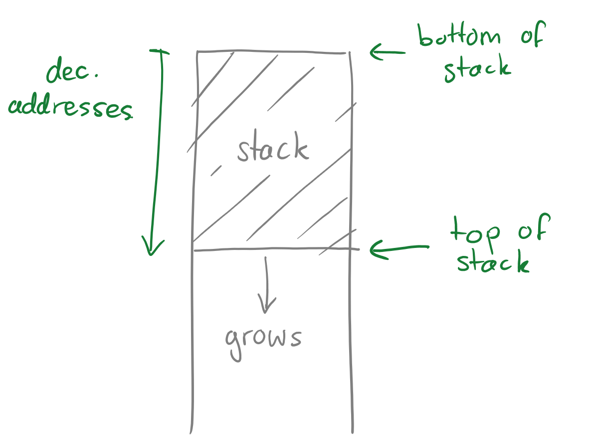
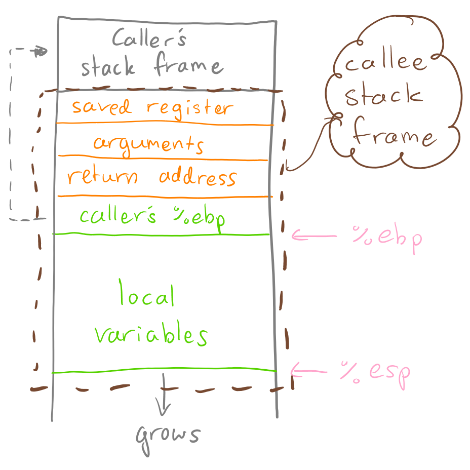
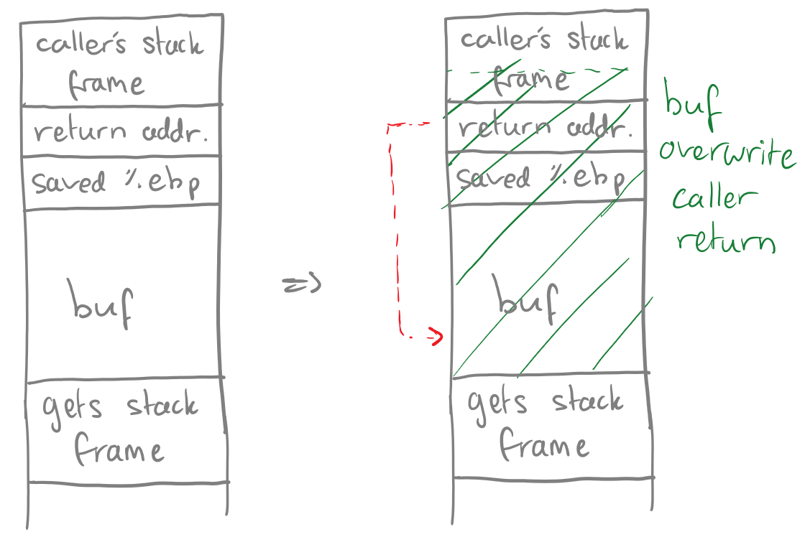

Buffer Overflow in C
Background
The programming language C is commonly referred to as being an "unsafe" language.
However, in the setting of a learning environment, this "unsafe" nature is the perfect
medium through which students can be taught the nature of the modern machine - although
still abstracted from its true behaviour.
One famous example of the unsafe nature of C is demonstrated through an even more famous
cybersecurity exploit - the buffer overflow.
Buffer Overflow Analogy
A buffer overflow can be abstracted with the following example:
Imagine you have an empty glass and you ask your friend to give you some water - and you also happen
to be wearing your favourite wrist watch. Your friend pours the water but accidentally overfills the glass,
spilling water all over your hand and your brand new watch. From here, anything could happen.
If you're lucky, your watch may have survived; if you're unlucky and water got into the wrong
spot, your watch may have died; or maybe the water causes a glitch and your watch starts running backwards.
The point is - when the glass overflows, anything might happen.
The same is true for buffer overflows in programming. Think of the glass as an array, the water as
data being put into the array, and the result of the watch being the response of the program.
Sounds dangerous right? That's because it is, and there are cetain functions in C that make buffer
overflows relatively easy for a beginner programmer to induce. Examples of such functions incldude:
gets(), sprintf(), strcpy(), and strcat().
The Stack
We will assume that the array is allocated in the stack (hence we will be analysing a stack buffer overflow).
The stack begins at higher addresses and grows towards lower addresses; the top of the stack has the highest
address (refer to Figure 1).

Note that when a function is called on the stack by a "caller", a "callee" stack frame is created for that function.
The stack frame consists of the arguments given, the base pointer of the caller function, local variables
(arrays, etc...), and the address of the caller base pointer (i.e. where to go once the callee is finished).
The stack utilises two main registers to operate: the "stack pointer" (%esp) and the "base pointer" (%ebp) -
where %esp always points to the top of the stack and %ebp points to the frame of the current function (refer
to Figure 2).

Knowing this, we can now see how a stack buffer overflow works - also known as "stack smashing".
Stack Buffer Overflow / Stack Smashing
Buffer overflow is achieved by writing to more memory than was allocated for a particular variable (usually
a character array). By doing this, metadata of the current stack frame will be overwritten and crucially -
there there is a possibility that the return pointer for the caller's stack frame is also overwritten.
If this occurs, once the callee finishes executing, the operating system will not know where to return to
since the return address has been corrupted.
This can be exploited maliciously by deliberately overwriting the return address value to point back into the
buffer that caused the overwrite in the first place (the callee array). Finally, if the attacker filled the array
with malicious code, then once the callee "finishes", the buffer/malicious code will be executed (refer to Figure 3
which displays a buffer overflow caused by a call to get(s)).

You may be wondering "sure that would work, but how can an attacker even write over the bounds of an array?
Wouldn't the program give an error or segmentation fault before?" - which is a valid question. However, this is
where the unsafe nature of C comes in to play.
Using a function like strcpy() to copy user input into an array will allow for writing over the bounds of the array
since strcpy() will only finish copying until a null character is found. If the attack places this null character
at an index past the bounds of the array - then the array, and hence the callee stack frame, will be successfully
overwritten.
For example, if the victim allocates a buffer of 200 bytes and copies user input into this buffer using strcpy(),
then the attacker can exploit this by giving an input longer than 200 bytes. The attacker's input will contain
their malicious code for execution later, along with the values that will overwrite the return pointers and
re-direct them back into their buffer/attacker input.
Protection and Prevention
To learn about how to protect against and prevent buffer overflows from occurring, take a look the following page: